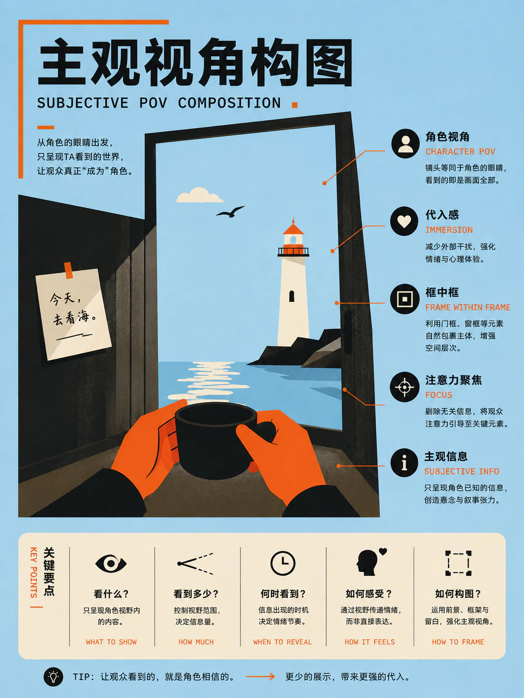

禁区 01
主角情绪爆发、需要看表情时
硬用主观：看不到主角自己的脸
镜头成了主角的双眼，观众只能对着墙壁或对手发呆，彻底错失演员最动人的眼眶颤动与停顿，共情反倒大打折扣。
解药：切回反应特写或净单人镜头
用两秒主观镜头交代「TA 看见了什么」，马上切回308 净单人镜头承接主角的真实反应，情绪才算落袋。
SUBJECTIVE POV COMPOSITION
从角色的眼睛出发，只呈现 TA 看到的世界，让观众真正“成为”角色。
画布横纵拖转头看景 · 拖门沿橙柄推拉门扇 · 点下沿切换捧杯双手 · 方向键与 [ ] 微调 · Space 睁眼
只呈现角色视野内的内容。
WHAT TO SHOW 主体出框控制视野范围，决定信息量。
HOW MUCH 门开 18°信息出现的时机决定情绪节奏。
WHEN TO REVEAL 按 Space 睁眼揭示通过视野传递情绪，而非直接表达。
HOW IT FEELS 平静呼吸 · 45mm运用前景、框架与留白，强化主观视角。
HOW TO FRAME 无身体锚从角色的眼睛出发，只呈现 TA 看到的世界，让观众真正“成为”角色。
TIP：让观众看到的，就是角色相信的。 更少的展示，带来更强的代入。
ORIGIN & CINEMA HISTORY · 1900 — 2007
主观视角构图不是数字时代的发明。从 1900 年镜头前一块打孔的黑纸板开始，电影人花了一百多年摸索「怎样让镜头长进角色眼睛里，又在什么时候抽身」。点击下面五个历史节点，看第一人称语法如何成型。
COVERAGE SPECTRUM · FIVE CAMERA POSITIONS
在「视角与镜头覆盖」这一小类里，摄影机只要前后挪开半步，画面身份就完全变了。点选片场俯视图上的五个机位（或按钮），直接对比 306 与四位兄弟镜头的取景边界。
片场俯视机位图 · 点选任意机位
WHEN TO REVEAL · PROSPECTIVE VS RETROSPECTIVE POV
原海报把「何时看到？」单列一条——因为主观视角的魔力不止藏在单帧构图里，还藏在剪辑的先后次序里。同样三幅画，把「谁在看」挪前或挪后一拍，观众的心理体验截然不同。
FRAME WITHIN FRAME & FOCAL PSYCHOLOGY
原海报提醒「通过视野传递情绪，而非直接表达」。不靠一句独白，只要换掉角色眼前的物理遮挡框、拉动镜头焦段，平静看海就能秒变警觉盯梢或孤立窒息。
切换角色眼前的物理边界
WHEN NOT TO USE SUBJECTIVE POV
马斯切利在 1965 年就提醒摄影师不要滥用主观镜头，《湖中女人》也用整部长片付过学费。下面四类场合一旦硬套主观视角就容易翻车——点击每张卡片切换「翻车态 / 解药态」对比。
硬用主观：看不到主角自己的脸
镜头成了主角的双眼，观众只能对着墙壁或对手发呆，彻底错失演员最动人的眼眶颤动与停顿，共情反倒大打折扣。
解药：切回反应特写或净单人镜头
用两秒主观镜头交代「TA 看见了什么」，马上切回308 净单人镜头承接主角的真实反应，情绪才算落袋。
硬用主观：晕动疲惫 + 对话直盯出戏
就像 1946/47 年《湖中女人》的教训：对手演员不断直视镜头念台词，时间一长反而像在质问观众本人，步态晃动也带来生理疲劳。
解药：短脉冲穿插，主干回过肩或客观
把主观镜头留给推门、揭秘、惊醒等高浓度节拍（经验上常控制在数秒到一两分钟），常规对谈交还305 过肩构图。
硬用主观：空间地理一秒崩塌
人眼一次只盯一个小锥角，当三四个人在不同方向同时移动，主观视点会把整场调度切成支离破碎的晃动碎片，观众分不清谁在哪。
解药：先立客观全景，再局部插入主观
先用307 客观视角构图把房间布局与人物方位交代透彻，再在关键一瞬间扎进角色眼里制造冲击。
硬用主观：情绪滤镜干扰客观判断
主观视角天然带着「藏起一半、只信眼前」的偏见属性；做建筑测绘、产品结构拆解或冷静纪实时，会平白削弱可信度。
解药：采用平视中立的客观构图
退回稳定三脚架与中立视高，让观众自由扫描所有部件，不强行替他们挑选情绪立场。
VISUAL PRACTICE · SINGLE-VARIABLE FRAMING AUDIT
ORIGINAL POSTER ARCHIVE & PALETTE DNA

“从角色的眼睛出发，只呈现 TA 看到的世界，让观众真正‘成为’角色。”
TIP：让观众看到的，就是角色相信的。更少的展示，带来更强的代入。
#9CCEE9#EE5C18#151918#F4E7D1#73B3D5